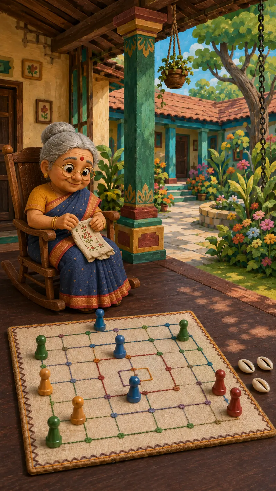

Game set owns the lower-middle foreground
It is the largest actionable object and leads directly to Match Setup.
Block 00 · First reusable slice
The app opens as a connected place, not a game grid: Grandma anchors the emotional setting, the physical game set owns the foreground, and the courtyard remains one intentional move away.

Composition intent
This direction keeps the warmth of a lived-in family home without turning gameplay into decoration or making Grandma a dialogue gate.
It is the largest actionable object and leads directly to Match Setup.
Her quiet embroidery supports the setting while leaving the game visually dominant.
A right-side opening and familiar 48×48 cue promise one-scene travel to Navakankari.
Controlled leaf shadows and restrained ambient life keep the home active without competing motion.
Code-owned portrait blueprint
The environment may extend on wider devices; these relationships do not drift.
First complete journey
The first launch teaches just enough to get a family from arrival to a real match. Every introduction is skippable and lands on the same complete state.
6–8 second painted reveal. Skip appears after one second.
Required name plus one of eight ready-made Clothfolk.
Short hints teach focus, travel, and activation; then get out of the way.
Ashta Chamma is playable on the veranda; Navakankari waits in the courtyard.
Choose local or online, fill valid seats, confirm Ready, then host starts.
Grandma’s embroidery resolves into the data-owned live board in 4–6 seconds.
Material grammar
Clear material ownership prevents the warm visual world from weakening interaction clarity.
House, veranda, courtyard, garden, light, and atmospheric loops.
Linen ground, stitched route, and embroidered border—never characters.
Pawns, cowries, dice, and only the bowls genuinely owned by a game.
Grandma and player roles outside active play, with soft sculpted textile detail.
Profile, settings, modes, seats, Ready, Start, and accessibility controls.
Grandma’s semantic states
These four states cover the slice. They are semantic inputs, not separate art styles.
Breathing, cloth settling, and occasional gaze changes stay below game-set motion.
Eyes and head acknowledge the selected game without speech, pointing, or recommendation.
A restrained hand-and-cloth response begins the lobby-to-board transition after Start.
Brief delight belongs in lobby and results, never as a persistent active-board character.
Fast decision ledger
React Native + Expo + TypeScript; one saved owner profile; local and invite-code online play; no launch timer or auto-forfeit.
Ashta Chamma veranda, portrait hierarchy, Clothfolk Grandma, exact 5×5 layout, courtyard travel cue, and clean native activation.
Fine spacing, authentic route marks, device-specific crops, ambient-loop timing, sound, haptics, and measured performance budgets.
Approve the direction as a whole, or name the one relationship that should change.
Does the physical game set clearly dominate while Grandma still makes the veranda feel emotionally owned?
Does the top-right profile read as identity and navigation—not as score, seat, or current turn?
Does the right-side courtyard cue read as travel to another authored scene rather than “Play”?